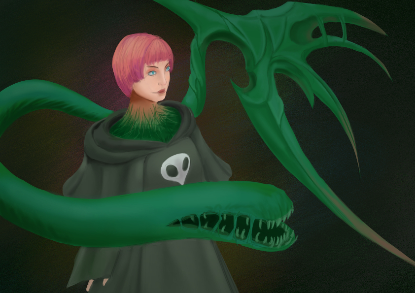

Hegemone - Artwork
published on January 02, 2024

Happy New Year!
Lets get into the swing of things.
This is fanart of Hegemone from FF14. I dug her design and music, so felt like drawing her. The contrast between her basic bowl cut and the monstrous appendages really worked for me.
Critique
There are some pretty clear mistakes that I should avoid in the future. * The character is below the horizon line giving the effect that the camera is looking down from above. This foreshortens the characters body, making it more difficult to draw and distorted. Try having the horizon line in the centre of the artwork * The character's face is wrong. Namely, the eyes and mouth are distorted in perspective * It took a long time to paint the robes despite being following fairly simple rules. Would like to be more familiar with painting clothes and faster ways of doing so * The artwork is just bland. It lacks a strong sense of tone/action/story. The character needs a better gesture with a clear sense of motion, and have an actual facial expression. The lighting is also incredibly basic. * Avoid choosing A4 canvas size in Clip Studio Paint. It's too low resolution to have the correct precision when drawing.